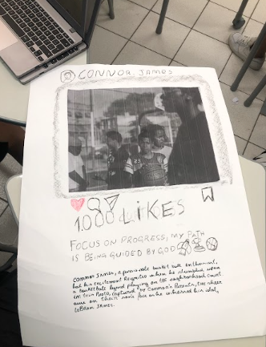
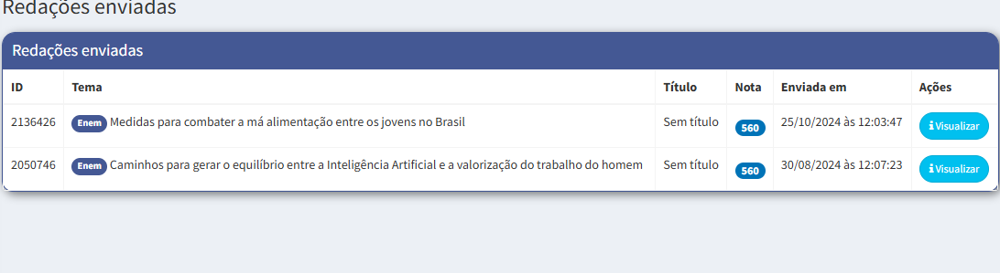

PRIMEIRO TRIMESTRE
Microfiction and the use of Simple Past
H11, H25, H10 e H24
Atingir o conhecimento coreto e claro sobre Microfiction and the use of Simple Past.
Produção de microfiction utilizando o simple past.
Atividade legal para montar um post do instagram utilizando o simple past.

Atividade Pré-modernismo
H3, H4, H16, H22 e H24
Atingir o conhecimento coreto e claro sobre o Pré-modernismo.
Cada grupo teve que pesquisar e criar uma apresentação com itens relativos à obra estudada.
Criar apresentações nunca foi meu forte mas para aprender cada vez mais essa atividade foi importante.
SEGUNDO TRIMESTRE
Nota Redação Online

TERCEIRO TRIMESTRE
Nota Redação Online